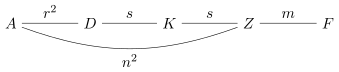

\(%%%%%%%%%%%%%%%%%%%%%%%%%%OPERATORS%%%%%%%%%%%%%%%%%%%%%%%%%% \renewcommand{\ker}{\operatorname{Ker}} \newcommand{\im}{\operatorname{Im}} \newcommand{\cok}{\operatorname{Cok}} \newcommand{\coim}{\operatorname{Coim}} \renewcommand{\hom}{\operatorname{Hom}} \newcommand{\dom}{\operatorname{Dom}} \newcommand{\cod}{\operatorname{Cod}} \newcommand{\Frac}{\operatorname{Frac}} \newcommand{\n}{\operatorname{N}} \renewcommand{\tr}{\operatorname{Tr}} \newcommand{\ch}{\operatorname{ch}} \newcommand{\open}{\operatorname{Open}} \newcommand{\into}{\hookrightarrow} \newcommand{\onto}{\twoheadrightarrow} \renewcommand{\op}{\operatorname{op}} \newcommand{\GL}{\operatorname{GL}} \newcommand{\SL}{\operatorname{SL}} \newcommand{\aut}{\operatorname{Aut}} \newcommand{\coredim}{\operatorname{coredim}} \newcommand{\End}{\operatorname{End}} \newcommand{\leftaction}{\curvearrowright} \newcommand{\rightaction}{\curvearrowleft} \newcommand{\tp}{{}^\mathrm{t}} \newcommand{\m}{\operatorname{M}} \newcommand{\Zen}{\operatorname{Z}} \newcommand{\gal}{\operatorname{Gal}} \newcommand{\id}{\operatorname{id}} \newcommand{\cl}{\operatorname{Cl}} %%%%%%%%%%%%%%%%%%%%%%%%%%OPERATORS%%%%%%%%%%%%%%%%%%%%%%%%%% %%%%%%%%%%%%%%%%%%%%%%%%%%%LETTERS%%%%%%%%%%%%%%%%%%%%%%%%%%% %blackboard bold% \newcommand{\bbA}{\mathbb{A}} \newcommand{\bbB}{\mathbb{B}} \newcommand{\bbC}{\mathbb{C}} \newcommand{\bbD}{\mathbb{D}} \newcommand{\bbE}{\mathbb{E}} \newcommand{\bbF}{\mathbb{F}} \newcommand{\bbG}{\mathbb{G}} \newcommand{\bbH}{\mathbb{H}} \newcommand{\bbI}{\mathbb{I}} \newcommand{\bbJ}{\mathbb{J}} \newcommand{\bbK}{\mathbb{K}} \newcommand{\bbL}{\mathbb{L}} \newcommand{\bbM}{\mathbb{M}} \newcommand{\bbN}{\mathbb{N}} \newcommand{\bbO}{\mathbb{O}} \newcommand{\bbP}{\mathbb{P}} \newcommand{\bbQ}{\mathbb{Q}} \newcommand{\bbR}{\mathbb{R}} \newcommand{\bbS}{\mathbb{S}} \newcommand{\bbT}{\mathbb{T}} \newcommand{\bbU}{\mathbb{U}} \newcommand{\bbV}{\mathbb{V}} \newcommand{\bbW}{\mathbb{W}} \newcommand{\bbX}{\mathbb{X}} \newcommand{\bbY}{\mathbb{Y}} \newcommand{\bbZ}{\mathbb{Z}} %greek alphabets% \newcommand{\ga}{\alpha} \newcommand{\gb}{\beta} \renewcommand{\gg}{\gamma} \newcommand{\gd}{\delta} \renewcommand{\ge}{\varepsilon} \newcommand{\gz}{\zeta} \newcommand{\gh}{\eta} \newcommand{\gth}{\theta} \newcommand{\gi}{\iota} \newcommand{\gk}{\kappa} \newcommand{\gl}{\lambda} \newcommand{\gm}{\mu} \newcommand{\gn}{\nu} \newcommand{\gx}{\xi} \newcommand{\gp}{\pi} \newcommand{\gr}{\rho} \newcommand{\gs}{\sigma} \providecommand{\gt}{\tau} \newcommand{\gu}{\upsilon} \newcommand{\gph}{\phi} \newcommand{\gvph}{\varphi} \newcommand{\gch}{\chi} \newcommand{\gps}{\psi} \newcommand{\gw}{\omega} %greek alphabets uppercase% \newcommand{\gA}{\Alpha} \newcommand{\gB}{\Beta} \newcommand{\gG}{\Gamma} \newcommand{\gD}{\Delta} \newcommand{\gTH}{\Theta} \newcommand{\gL}{\Lambda} \newcommand{\gX}{\Xi} \newcommand{\gP}{\Pi} \newcommand{\gS}{\Sigma} \newcommand{\gPH}{\Phi} \newcommand{\gPS}{\Psi} \newcommand{\gW}{\Omega} %frakturs% \newcommand{\fka}{\mathfrak{a}} \newcommand{\fkb}{\mathfrak{b}} \newcommand{\fkc}{\mathfrak{c}} \newcommand{\fkd}{\mathfrak{d}} \newcommand{\fke}{\mathfrak{e}} \newcommand{\fkf}{\mathfrak{f}} \newcommand{\fkg}{\mathfrak{g}} \newcommand{\fkh}{\mathfrak{h}} \newcommand{\fki}{\mathfrak{i}} \newcommand{\fkj}{\mathfrak{j}} \newcommand{\fkk}{\mathfrak{k}} \newcommand{\fkl}{\mathfrak{l}} \newcommand{\fkm}{\mathfrak{m}} \newcommand{\fkn}{\mathfrak{n}} \newcommand{\fko}{\mathfrak{o}} \newcommand{\fkp}{\mathfrak{p}} \newcommand{\fkq}{\mathfrak{q}} \newcommand{\fkr}{\mathfrak{r}} \newcommand{\fks}{\mathfrak{s}} \newcommand{\fkt}{\mathfrak{t}} \newcommand{\fku}{\mathfrak{u}} \newcommand{\fkv}{\mathfrak{v}} \newcommand{\fkw}{\mathfrak{w}} \newcommand{\fkx}{\mathfrak{x}} \newcommand{\fky}{\mathfrak{y}} \newcommand{\fkz}{\mathfrak{z}} %%%%%%%%%%%%%%%%%%%%%%%%%%%LETTERS%%%%%%%%%%%%%%%%%%%%%%%%%%% \)
\(\S \)19の設定
注意 19.1. 本節では\(F\)代数は有限次元であるとする．また以下の略称を使うことがある．
この節では前節で見た単純代数に，さらに中心的であるという条件を加えた中心的単純代数について観察していく．まず基本的な概念を定める．
定義 19.2.中心的単純代数
命題 19.3.中心の性質
\(F\)代数\(A,A_\gl \)について，以下が成り立つ．
証明.
(1)-(4)簡単に示される．
(5)定理??と(2),(3)よりしたがう．
(6)(7)定理??と(1),(5)よりしたがう． □
命題 19.4.中心的単純代数の構造
単純\(F\)代数\(A\)について，\(A\)が中心的であることと，\(A\)が可除部分が中心的可除\(F\)代数であることは同値である．つまり中心的単純\(F\)代数は\(D\)を可除\(F\)代数，\(r\in \bbN \)として\(\m _r(D)\)と同型である．
証明. 命題19.3(2)からしたがう． □
詳しく中心的単純代数を調べるにあたってテンソル積を用いるため，まずテンソル積について代数がどう振る舞うかを見ていく．まず代数のテンソル積を定める．
定義 19.5.\(F\)代数のテンソル積
（有限次元とは限らない）\(F\)代数\(A,B\)に対して,\(F\)ベクトル空間としてのテンソル積\(A\otimes _F B\)に積を \[ (a_1\otimes b_1)(a_2\otimes b_2)=a_1a_2\otimes b_1b_2 \] を\(F\)線形に拡張して定める．これはwell-definedであり，この積により\(A\otimes B\)は\(F\)代数となる．
証明. 積のwell-definednessを示す．双線型写像\(\gPH :(A\otimes _F B)\times (A\otimes _F B)\to A\otimes _F B\)であって \[ \gPH (a_1\otimes b_1,a_2\otimes b_2)=a_1a_2\otimes b_1b_2 \] なるものの存在を示せば良い．\(a_2\in A,b_2\in B\)を任意にとる．テンソル積の普遍性より，双線型写像 \[ A\times B\ni (a_1,b_1)\mapsto a_1a_2\otimes b_1b_2 \in A\otimes _F B \] から誘導される線型写像を\(\gPS _{a_2,b_2}\in \hom _F(A\otimes _F B, A\otimes _F B)\)とする．これにより \[ \gPS :A\times B \to \hom _F(A\otimes _F B,A\otimes _F B) \] が定めるが，これは双線型写像である．よって\(\gPS \)が誘導する線型写像 \[ \gPH ':A\otimes _F B\to \hom _F(A\otimes _F B,A\otimes _F B) \] が定まる．これが誘導する写像 \[ \gPH :(A\otimes _F B)\times (A\otimes _F B)\ni (x,y)\to \gPH '(y)(x)\in A\otimes _F B \] は双線型写像であり\(\gPH (a_1\otimes b_1,a_2\otimes b_2)=a_1a_2\otimes b_1b_2\)を満たす． □
\(A\otimes B\)について，性質を簡単に復習する．
命題 19.6.テンソル積の性質
\(A,B\)を\(F\)代数とする．
命題 19.7.テンソル積への分解
\(F\)代数\(C\)とその部分代数\(A,B\)に対して以下が成立しているとする．
このとき\(C\cong A\otimes _F B\)である．
証明. \(A\times B\ni (a,b)\mapsto ab\in C\)は双線型ゆえ線型写像\(\gvph :A\otimes _F B\ni a\otimes b\mapsto ab\in C\)を誘導する．(2)より\(\gvph \)は全射であるので(3)より\(F\)ベクトル空間の同型写像である．また(1)より \begin {align*} \gvph ((a_1\otimes b_1)(a_2\otimes b_2)) & =\gvph (a_1a_2\otimes b_1b_2) \\ & =a_1a_2b_1b_2 \\ & =a_1b_1a_2b_2 \\ & =\gvph (a_1\otimes b_1)\gvph (a_2\otimes b_2) \end {align*}
であり積も保つ．よって\(A\otimes _F B\cong C\)である． □
この命題を使ってテンソル積の具体例を見よう．
例 19.8. \(\m _r(A)\)とその部分代数\(\m _r(F),AI_r\)について考えると，命題19.7より，\(\m _r(A)\cong \m _r(F)\otimes _F A\)である．さらにこれより\(F\)代数\(A,B\)に対して \[ \m _r(A)\otimes _F B\cong \m _r(F)\otimes _F A\otimes _F B\cong \m _r(A\otimes _F B) \] である．
例 19.9. \(\m _{rs}(F)\)の部分代数\(A,B\)を以下で定める． \[ A=\left \{ \mqty ( x_{11}I_s&\cdots&x _{1r}I_s\\ \vdots& \ddots& \vdots \\ x_{r1}I_s&\cdots&x _{rr}I_s )\,\Bigg |\, (x_{ij})_{ij}\in \m _r(F)\right \},\quad B=\left \{ \mqty ( Y&\cdots&Y \\ \vdots& \ddots& \vdots \\ Y&\cdots&Y )\,\Bigg |\, Y\in \m _s(F)\right \}. \] \(A\cong \m _r(F),B\cong \m _s(F)\)である．命題19.7より\(\m _{rs}(F)\cong \m _r(\m _s(F))\cong \m _r(F)\otimes _F\m _s(F)\)である．なおこれにより\(\m _r(F),\m _s(F)\subseteq \m _{rs}(F)\)とみなしたときの\(X=(x_{ij})\in \m _r(F)\)と\(Y\in \m _s(F)\)の積 \[ XY =\mqty ( x_{11}Y&\cdots&x _{1r}Y\\ \vdots& \ddots& \vdots \\ x_{r1}Y&\cdots&x _{rr}Y ) \] はクロネッカー積と呼ばれる．
命題 19.10.両側代数としてのテンソル積
\(K,L\)を体とする．\(K\)代数かつ\(L\)代数であり，\(K\)と\(L\)の作用が可換であるような代数を\((K,L)\)両側代数と呼ぶことにする．\(A\)を\(K\)代数，\(B\)を\((K,L)\)両側代数，\(C\)を\(L\)代数とする．
証明.
命題 19.11.係数拡大
\(A\)を\(F\)代数，\(K\)を\(F\)の拡大体（共に有限次とは限らない）とする．\(A\otimes _F K\)は\(K\)代数となる，これを\(F\)から\(K\)への\(A\)の係数拡大と呼び\(A_K\)と書く．
補題 19.12.テンソル積と中心
（有限次元とは限らない）\(F\)代数\(A,B\),拡大体\(K\)に対して以下が成立する．
証明.
補題 19.13.CSAとのテンソル積の両側イデアル
\(B\)を中心的単純\(F\)代数，\(A\)を\(F\)代数（共に有限次元とは限らない）とする．このとき \[ (A\otimes _F Bの両側イデアル全体)=\{I\otimes B\mid I\text {は}A\text {の両側イデアル}\} \] である．
証明.
(\(\supseteq \))明らか．
(\(\subseteq \))\(A\otimes _F B\)の両側イデアル\(J\neq 0\)をとる．\(I=J\cap A\)とおく．\(I\)は\(A\)の両側イデアルであり\(J\supseteq I\otimes B\)である．\(I=A\)なら証明は終了している．\(I\neq A\)のときに\(J\setminus I\otimes B=\varnothing \)を背理法で示す．
\(I\)の基底\(\{x_\gn \}_{\gn \in N}\)を延長して\(A\)の基底\(\{x_\gl \}_{\gl \in \gL }\)をとる．\(\gL =M\sqcup N\)とおく．\(N\neq \varnothing \)である．ある\(z\in J\setminus I\otimes B\)を構成し\(z\in I\)を示すことで矛盾させる．\(I\otimes B\)の元で調整することで，\(w\in J\setminus I\otimes B\)を\(w=\sum _{\gn \in N}x_\gn b_\gn \)となるようにとれる．\(N_w=\{\gn \in N\mid b_\gn \neq 0\}\)は有限集合ゆえ，\(\# N_w\)が最小になるように\(w\)をとれる．\(\gk \in N\)をとる．
\[ B_\gk =\left \{c_\gk \in B\,\Bigg |\, \sum _{\gn \in N_w}x_\gn c_\gn \in J\right \} \] とおくと，\(B_\gk \)は\(B\)の両側イデアルであり\(B\)が単純ゆえ\(B_\gk =B\)．よって \[ z=\sum _{\gn \in N_w}x_\gn c_\gn \quad (c_\gk =1) \] なる\(z\in J\setminus I\otimes B\)をとれる．任意の\(d\in B\)について \[ dz-zd=\sum _{\gn \in N_w}x_\gn (dc_\gn -c_\gn d) \] であり\(x_\gk \)の係数は0．\(\# N_w\)の最小性から\(dz-zd=0\)，すなわち任意の\(\gn \in N_w\)で\(dc_\gn =c_\gn d\)．\(d\in B\)は任意だったので\(c_\gn \in \Zen (B)=F\)．よって\(z\in I\)であるがこれは矛盾である．
□
定理 19.14.CSAとのテンソル積はSA,SSA,CSAを保存
中心的単純\(F\)代数\(B\)に対して以下が成り立つ．
証明.
□定理 19.15.係数拡大によるCSA判定
証明.
□定理 19.16.CSAの次元は平方数
中心的単純\(F\)代数\(A\)とその可除部分について\([A:F],[D:F]\)は平方数である．\(\sqrt {[A:F]}\)を\(A\)の次数，\(\sqrt {[D:F]}\)を\(A\)の指数という．
証明. 定理19.15(2)より\([A:F]\)が平方数であることがしたがう．\(A\)の容量を\(r\)とすると\(A\cong \m _r(D)\)より\([A:F]=[D:F]r^2\)であるため\([D:F]\)も平方数である． □
さらに中心的単純代数の性質を調べていくために反転代数を導入しよう．行列の転置や，四元数代数の共役は，加法やスカラー倍は保存するが \[ \tp (AB)=\tp B \tp A,\quad \overline {xy}=\overline {y}\,\overline {x} \] と積は入れ替えてしまう．反転代数はこのような写像を扱う概念である．今回は加群の右と左を入れ替えるために反転代数を用いる．
定義 19.17.反転代数
命題 19.19.反転代数の普遍性
命題 19.20.自己準同型の反転
\(A,B\)を環または\(F\)代数とし \[ F:\hom (A,B)\ni \ga \mapsto \op _{B} \circ \ga \circ \op _{A^{\op }} \in \hom (A^{\op },B^{\op }) \] とおく．
証明.
まずwell-defined性を示す．\(\ga \in \hom (A,B),x,y\in A\)に対して \begin {align*} F(\ga )(x^{\op }y^{\op }) & =\op (\ga (\op ((yx)^{\op }))) \\ & =\op (\ga (yx)) \\ & =\op (\ga (y)\ga (x)) \\ & =\ga (x)^{\op }\ga (y)^{\op } \\ & =\op (\ga (\op (x^{\op })))\op (\ga (\op (y^{\op }))) \\ & =F(\ga )(x^{\op })F(\ga )(y^{\op }) \end {align*}
より\(F(\ga )\)は積を保つ．他の演算についても保たれるため\(F(\ga )\in \hom (A^{\op },B^{\op })\)である．\(A\)と\(A^{\op }\)，\(B\)と\(B^{\op }\)を入れ替えることで\(F\)の逆写像を得られる．よって\(F\)は全単射である．
命題 19.21.作用の反転
\(A\)を環，または\(F\)代数，\(M\)を右\(A\)加群とする．\(A^{\op }\)の\(M\)への作用を \[ a^{\op } m=ma \] により定めると，\(M\)は左\(A^{\op }\)加群となる．これは左右逆でも成り立つ．
証明. \(A\)の作用を定める準同型が\(\gvph :A\to \End (M)\)であるとき，主張の\(A^{\op }\)の作用は準同型\(\op \circ \gvph \circ \op :A^{\op }\to \End (M)^{\op }\)によって定められる．よってしたがう． □
定義 19.22.両側加群
アーベル群\((M,+)\)が左\(A\)加群でも右\(B\)加群でもあり，\(a\in A,b\in B,m\in M\)に対して \[ (am)b=a(mb) \] であるとき，\(M\)を両側\((A,B)\)加群という．両側\((A,B)\)加群\(M\)を\({}_AM_B\)ともかく．
命題 19.23.両側加群を右加群に
\(A,B\)を\(F\)代数，\(M\)を\((A,B)\)両側加群とする．\(A^{\op }\otimes _F B\)の\(M\)への作用を \[ m\left (\sum _{i=1}^n {a_i}^{\op }\otimes {b_i}\right )=\sum _{i=1}^n a_imb_i \] により定めると，この作用はwell-definedであり，\(M\)は右\(A\otimes _F B\)加群となる．
証明. \(\gvph :A\to \End _\bbZ (M),\gps :B\to \End _\bbZ (M)\)を\(A,B\)の作用を与える準同型とする．双線型写像 \[ A^{\op }\times B\ni (a^{\op },b)\to \gvph (a)\circ \gps (b)(=\gps (b)\circ \gvph (a))\in \End _\bbZ (M) \] が誘導する準同型\(A^{\op }\otimes _F B\to \End _\bbZ (M)\)が主張の作用を与える． □
では反転代数を使って中心的単純代数の性質を調べていこう．まず反転とのテンソル積で可除部分を自明にすることができる．
定理 19.24.CSAと反転代数のテンソル積は可除部分が自明
\(A\)を中心的単純\(F\)代数とする．このとき\(A^{\op }\otimes _F A\cong \m _r(F)\,(r=[A:F])\)である．
証明. 両側\((A,A)\)加群\(A\)を考えることで右\(A^{\op }\otimes _F A\)加群\(A\)を得る．定理19.14より\(A^{\op }\otimes _F A\)は中心的単純\(F\)代数である．\(A^{\op }\otimes _F A\)の\(A\)への作用は\(F\)準同型\(\gvph :A^{\op }\otimes _F A\to \End _F(A)\)を導く．単純性と\(\im \gvph \neq 0\)より\(\ker \gvph =0\)である．これと\([A^{\op }\otimes _F A:F]=r^2=[\End _F(A):F]\)より\(\gvph \)は同型である．よって\(A^{\op }\otimes _F A\cong \End _F(A)=\m _r(F)\)である． □
次に中心的単純台数の単純な部分代数について見ていく．単純部分代数たちは\(A^\times \)の共役作用と，中心化\(\Zen \)を通じて互いに関係しあっている．まず共役作用を通じた関係を見よう．
定理 19.25.CSAの部分SAは共役
\(A\)を中心的単純\(F\)代数，\(B\)を単純\(F\)代数とする．単射準同型\(\gs ,\gt :B\to A\)に対してある\(\gg \in A^\times \)が存在し，任意の\(b\in B\)に対して \[ b^\gt = \gg b^\gs \gg ^{-1} \] が成り立つ．
証明. \(B\)からの作用\(ba=b^{\gs } a\)により\(A_A\)を左\(B\)加群とみなすと，\(A\)は両側\((B,A)\)加群となる．命題19.23より\(A\)は右\(B^{\op }\otimes _F A\)加群となる．これを\(A_{\gs }\)とかく．同様に\(A_{\gt }\)を定める．定理19.14(1)より\(B^{\op }\otimes _F A\)は単純であるので補題??より同型\(f:A_{\gs }\to A_{\gt }\)が存在する．\(\gg =f(1_A)\)とおくと\(f(a)=\gg a\)であることに注意すれば，任意の\(b\in B\)に対して \[ \gg b^\gs = f(b^\gs ) = f(1_A(b^\gs \otimes 1_A))=f(1_A)(b^\gt \otimes 1_A)=b^\gt \gg \] より\(b^\gt =\gg b^\gs \gg ^{-1}\)が成り立つ．\(f\)が同型であるため\(A=f(A)=\gg A\)であるため\(\gg \in A^\times \)である． □
系 19.26.CSAの自己同型は内部自己同型
\(A\)を中心的単純\(F\)代数，\(\gs :A\to A\)を自己同型とする．このときある\(\gg \in A^\times \)が存在し，任意の\(a\in A\)で \[ a^\gs = \gg a\gg ^{-1} \] が成り立つ．
証明. 定理19.25よりしたがう． □
続いて中心化\(\Zen \)を通じた関係を見よう．単純部分代数は双子のように対になっており中心化\(\Zen \)で写りあう．
補題 19.27.SA上有限生成加群の自己同型群
\(A\)を可除部分が\(D\)，容量が\(r\)の単純\(F\)代数とする．有限生成右\(A\)加群\(W\)について，\(\End _A(W)\)は\(D\)を可除部分とする単純\(F\)代数であり， \[ \quad [W:F]^2=[A:F][\End _A(W):F] \] が成り立つ．
証明. \(M=D^r\)とおくと，\(M\)は例??より単純右\(A\)加群である．命題??よりある\(s\in \bbN \)があり\(W\cong M^s\)が成り立つ．よって命題??,例??より \[ \End _A(W)\cong \m _s(\End _A(V))\cong \m _s(D), \] すなわち\(\End _A(W)\)は可除部分\(D\)，容量\(s\)の単純代数である． さらに\([D:F]=t\)とおくと \[ [W:F]=trs,\quad [A:F]=tr^2,\quad [\End _A(W):F]=ts^2 \] ゆえ\([W:F]^2=[A:F][\End _A(W):F]\)が成り立つ． □
定理 19.28.CSAの部分SAの中心化代数
\(A\)を中心的単純\(F\)代数，\(B\)をその単純\(F\)部分代数，\(C=\Zen _A(B)\)とする．このとき以下が成り立つ．
証明. \(A\)の可除部分を\(D\)，容量を\(r\in \bbN \)とおく．このとき\(M=D^r\)とおくと，例??より\(D\)の作用と\(A\)の作用は可換ゆえ，\(M\)は両側\((D,B)\)加群である．命題19.23（の左右逆）を用いて\(M\)は左\(D\otimes _FB^{\op }\)加群になる．このとき\(C=\End _{D\otimes _FB^{\op }}(M)\)である．なぜなら\(\End _{D\otimes _FB^{\op }}(M)\subseteq \End _{D}(M)=A\)であり右作用\(M\rightaction A\)が忠実ゆえ，\(a\in A\)について \begin {align*} a\in \End _{D\otimes _FB^{\op }}(M) & \iff \forall d\in D, \forall b\in B,\forall m\in M, (dmb)a=d(ma)b \\ & \iff \forall b\in B, ba=ab \end {align*}
であるから．定理19.14より\(D\otimes _F B^{\op }\)は単純ゆえ，補題19.27より\(C=\End _{D\otimes _FB^{\op }}(M)\)は単純である．よって(1)がしたがう．また \begin {align*} [A:F] & =[D:F]r^2 \\ & =[M:F]^2/[D:F] \\ & =[D\otimes _F B^{\op }:F][\End _{D\otimes _FB^{\op }}(M):F]/[D:F] \\ & =[D:F][B:F][C:F]/[D:F] \\ & =[B:F][C:F] \end {align*}
より(2)が成り立つ．さらに\(C\)の可除部分は\(D\otimes _F B^{\op }\)の可除部分と一致する．例19.8より \[ A\otimes _F B^{\op }\cong \m _r(F)\otimes _F D\otimes _F B^{\op }\cong \m _r(D\otimes _F B^{\op }) \] でありこれと例19.9より，\(D\otimes _F B^{\op }\)と\(A\otimes _F B^{\op }\)の可除部分は一致する．よって(3)がしたがう．(2)を\(C\)に対して用いると\([A:F]=[C:F][\Zen _A(C):F]\)である．これと(2)より\([B:F]=[\Zen _A(C):F]\)であり，\(B\subseteq \Zen _A(C)\)ゆえ(4)の\(\Zen _A(C)=B\)が成り立つ． □
定理 19.29.CSAの部分体の性質
\(A\)を中心的単純\(F\)代数，\(K\)をその部分体とする．\(\Zen _A(K)\)は中心的単純\(K\)代数であり，\(A\)の次数は\(\Zen _A(K)\)の次数の\([K:F]\)倍，すなわち \[ \sqrt {[A:F]}=\sqrt {[\Zen _A(K):K]}[K:F] \] である．また \[ \sqrt {[A:F]}=[K:F](=m\text {とおく})\iff \Zen _A(K)=K \] であり，この同値な条件を満たすとき\(A\otimes _F K\cong \m _m(K)\)となる．
証明. \(K\)は単純\(F\)代数ゆえ定理19.28より\(\Zen _A(K)\)は単純であり，(4)\(A\)でのその中心化代数は\(K\)であるため，中心的単純\(K\)代数である．さらに \[ [A:F]=[\Zen _A(K):F][K:F]=[\Zen _A(K):K][K:F]^2 \] である．よって主張の同値も成り立つ．これが成り立つとき\(\Zen _A(K)=K\)の可除部分が\(K\)であることと再び定理19.28より，\(A\otimes _F K\cong K^{\op }\otimes _F A\)の可除部分は\(K\)である．\([A\otimes _F K:F]=[A:F][K:F]=m^2[K:F]\)より容量は\(m\)である．したがって\(A\otimes _F K\cong \m _m(K)\)である． □
中心的単純代数を中心的可除代数に絞ってさらに性質を見ていこう．
補題 19.30.CDAは\(F\)の分離拡大を含む
\(D\supsetneq F\)が中心的可除\(F\)代数であるとき，\(D\)は\(F\)の真の分離拡大体を含む．
証明. 任意に\(d\in D\setminus F\)をとる．\(F[d]/F\)は有限次拡大である．よってある\(d\)で\(F[d]/F\)が純非分離拡大でなければ\(F\)の\(F[d]\)での分離閉包は\(F\)の真の拡大体になる．よってある\(d\)で\(F[d]/F\)が純非分離拡大でないことを示せば良い．任意の\(d\in D\setminus F\)に対して\(F[d]/F\)が純非分離拡大であると仮定して，ある\(c\in D\setminus F\)で\(F[c]\)の非自明な\(F\)同型\(\gs \)が存在することを示すことで矛盾させる．\(F\)の標数は\(p>0\)とおける．\([F[d]:F]=q\)とすると\(e\in \bbN \)が存在し\(q=p^e\)となる．\(u=d^{p^{e-1}}\)とおくと\(u\notin F, u^p=d^q\in F, [F[u]:F]=p\)である． \[ \gs :D\ni x\mapsto uxu^{-1}\in D \] とする．\(\gs \in \End _F(D)\)であり，\(u^p=1\)より\(\gs ^p=1\)，\(u\notin F=\Zen (D)\)より\(\gs \neq 1\)である．すなわち\((\gs -1)^p=0,\gs -1\neq 0\)である．\((\gs -1)^r\neq 0\)なる最大の\(r\in \bbN \)をとる．\(1<r<p\)である．\((\gs -1)^r x\neq 0\)なる\(x\in D\)について \[ a=(\gs -1)^{r-1}x,\quad b=(\gs -1)^rx \] とおく．\(\gs (a)-a=b, \gs (b)-b=0\)である．\(c=a/b\)とおくと \[ \gs (c)=\frac {\gs (a)}{\gs (b)}=\frac {a+b}{b}=c+1 \] である．よって\(\gs |_{F[c]}\)は\(F[c]\)の非自明な\(F\)同型である． □
定理 19.31.CDAは指数次分離拡大を含む
\(D\)を中心的可除\(F\)代数とする．\(D\)は\([D:F]=[K:F]^2\)，すなわち拡大次数が\(D\)の指数となる\(F\)の分離拡大体\(K\)を含む．
証明. \([D:F]=m^2\)とおく．\(m=1\)なら明らか．\(m>1\)について考える．補題19.30より\(D\)は\(F\)の真の分離拡大\(K\)を含む．\(K\)を\([K:F]\)が最大になるようにとる．\([K:F]\neq m\)と仮定して矛盾を導く．\(\Zen _D(K)\)は\(K\)と異なる中心的可除\(K\)代数である．なぜなら定理19.29より\(\Zen _D(K)\)は中心的単純\(K\)代数であり次数を\(s\)とおくと\(m=s[K:F]\)ゆえ\(s\neq 1\)，つまり\(\Zen _D(K)\supsetneq K\)であり．さらに\(\Zen _D(K)\subseteq D\)であり\(d\in D\)について， \[ d\in \Zen _D(K)\iff \forall x\in K dx=xd\iff x\in K^\times , x^{-1}d^{-1}=d^{-1}x^{-1} \implies d^{-1}\in \Zen _D(K) \] ゆえ\(\Zen _D(K)\)は可除代数であるから．補題19.30より\(\Zen _D(K)\)は\(K\)の真の分離拡大\(L\)を含む．\([L:F]>[K:F]\)であるので\(K\)の取り方に矛盾する． □
\(F\)代数に対してトレースやノルムといった概念を定めよう．まずトレースとノルムを定義する際に用いる表現を導入する．
定義 19.32.表現
\(A\)が\(F\)ベクトル空間\(V\)に作用している時，\(V\)の基底をとるごとに次数\(\dim V\)の表現が定まる．このときの基底の取り方の違いを無視する同一視を行うのが表現の同値である．逆に表現も\(F\)ベクトル空間への作用を誘導するため加群も誘導する．表現の同値性は加群を使うと以下のように言い換えられる．
命題 19.33.同値な表現の加群は同型
\(A\)を\(F\)代数，\(\gr ,\gs \)を\(A\)の次数\(r\)の表現とする．\(\gr ,\gs \)が誘導する作用により\(F^r\)を\(A\)加群とみなしたものをそれぞれ\(V_{\gr },V_{\gs }\)とおく．このとき \[ \gr \sim \gs \iff V_{\gr }\cong V_{\gs } \] である．
証明. \(V_\gr \cong V_\gs \)が同型であるとは\(\gg \in \GL _r(F)\)が存在し，任意の\(a\in A,v\in F^r\)に対して \[ (v a^{\gs })\gg =(v\gg )a^{\gr } \] が成り立つことである．\(\m _r(F)\)は\(F^r\)に忠実に作用するので，これは \[ a^{\gs } \gg = \gg a^\gr \] と同値である． □
有限次拡大体\(K/F\)の場合はトレース，ノルムを右（または左）正則表現\(R\)を用いて \[ \tr _{K/F}(a)=\tr (a^R),\quad \n _{K/F}(a)=\det (a^R) \] と定めた．これを\(F\)代数\(A\)に拡張すると以下のようになる． \[ \tr _{A/F}(a)=\tr (a^R),\quad \n _{A/F}(a)=\det (a^R). \] しかし場合によってはこのトレース，ノルムが与える情報は少なくなっている．例えば\(A=\m _n(F)\)のとき，\(x=(a_{ij})\)とおくと標準的な基底に関する右正則表現は \[ x^R=\mqty ( a_{11}I_n&\cdots&a _{1n}I_n\\ \vdots& \ddots& \vdots \\ a_{n1}I_n&\cdots&a _{nn}I_n\\ ) \] であるので， \begin {align*} \tr _{A/F}(x) & =\tr \mqty ( a_{11}I_n & \cdots & a_{1n}I_n \\ \vdots & \ddots & \vdots \\ a_{n1}I_n & \cdots & a_{nn}I_n \\ )=na_{11}+\cdots +na_{nn})=n\tr (x), \\ \n _{A/F}(x) & =\det \mqty ( a_{11}I_n & \cdots & a_{1n}I_n \\ \vdots & \ddots & \vdots \\ a_{n1}I_n & \cdots & a_{nn}I_n \\ )=\det \mqty ( x & & \\ & \ddots & \\ & & x \\)=\det (x)^n \end {align*}
となる．\(F\)が\(x^n-1=0\)の非自明な解を持つとき\(\det (x)\neq \det (y)\)だが\(\n _{A/F}(x)=\n _{A/F}(y)\)なる\(x,y\)が存在する．また標数が\(n\)を割り切るとき\(\tr _{A/F}\)は常に\(0\)になる．これらの意味で，\(\n _{A/F},\tr _{A/F}\)は通常の行列式，トレースよりも情報量が少ない．この例の場合の，通常の行列式やトレースのような\(\n _{A/F},\tr _{A/F}\)を簡約したものを被約ノルム，被約トレースとして定めることを目指す．まず被約ノルム，被約トレースを定める代数のクラスを導入する．
定義 19.34.分離代数
\(F\)代数\(A\)が分離\(F\)代数であるとは，\(A\)が半単純\(F\)代数であり，\(\Zen (A)/F\)が分離拡大であることである．
定理 19.35.SAの表現,SSAの正則表現の同値性
証明.
補題 19.36.分離SAの係数拡大はSSA
\(A\)を分離単純\(F\)代数とする．任意の\(F\)の（有限次元とは限らない）拡大体\(L\)について，\(A\otimes _F L\)は半単純\(F\)代数である．
証明. \(Z=\Zen (A)\)とおく．\(\gW \)を\(L\)のガロア拡大体で\(Z\)の\(F\)準同型像を含むものとする． \[ S=\hom _F(Z,\gW )/\gal (\gW /L),\quad U_\gs =Z^\gs L \] とおく．定理??より \[ Z\otimes _F L\cong \bigoplus _{\gs \in S} U_{\gs } \] である．\(A\)の\(Z\)基底\(x_1,\ldots ,x_t\)をとると， \[ A\otimes _F L =\left (\bigoplus _{i=1}^t x_iZ\right )\otimes _F L= \bigoplus _{i=1}^t x_i(Z\otimes _F L)=\bigoplus _{\gs \in S}\bigoplus _{i=1}^t x_iU_{\gs }= \bigoplus _{\gs \in S}(A\otimes _Z U_{\gs }) \] □
定理 19.37.分離SAの正則表現の分解
\(A\)を分離単純\(F\)代数とする．\([A:\Zen (A)]=n^2, [\Zen (A):F]=m\)とおく．\(A\)の右または左正則表現\(\gr :A\to \m _{n^2m}(F)(\into \m _{n^2m}(\overline {F}))\)に対して，ある\(F\)準同型\(\gt :A\to \m _{mn}(\overline {F})\)が存在し， \[ \gr \sim \gt ^{\oplus n} \] が成り立つ．さらに\(\gch _P(x)\)で行列\(P\)の特性多項式を表すと，任意の\(a\in A\)に対して \[ \gch _{a^\gt }(x)\in F[x],\quad \gch _{a^\gr }(x)=\gch _{a^\gt }(x)^n \] が成り立つ．
証明.
\(A\)の可除部分を\(D\)，容量を\(r\)，\(Z=\Zen (D)(=\Zen (A))\)とおく．さらに\([D:Z]=s^2\)とおく．定理19.31より\([K:Z]=s\)なる\(D\)に含まれる\(Z\)の分離拡大体\(K\)が存在する． 
\(K\)の\(F\)上のガロア閉包\(L\)をとる．一度\(\gr \)を\(A\otimes _F L\)上に延長してある\(\gt \)の直和に分解し，それを\(A\)に制限することで\(\gr \)の直和分解を得よう．そのためにまず\(A\otimes _F L\)の構造を見る．
\(S=\hom _F(Z,L)=\gal (L/L)\backslash \hom _F(Z,L)\)とおくと，補題19.36より \[ A\otimes _F L\cong \bigoplus _{\gs \in S}(A\otimes _Z U_{\gs }) \] である．ここで\(U_\gs = Z^\gs L = L\)である．例19.8を用いると，各\(A\otimes _Z U_{\gs }\)について \[ A\otimes _Z U_{\gs } \cong \m _r(D)\otimes _Z U_{\gs }\cong \m _r(D\otimes _Z U_{\gs }) \] である．また\(D\otimes _Z U_{\gs }\)について\(\sqrt {[D:Z]}=[K:Z]=s\)ゆえ定理19.29と命題19.10より
\[ D\otimes _Z U_\gs = D\otimes _Z L = D\otimes _Z K\otimes _K L \cong \m _s(K)\otimes _K L \cong \m _s(L) = \m _s(U_{\gs }) \] である．したがって， \[ A\otimes _F L \cong \bigoplus _{\gs \in S} \m _{n}(U_{\gs }) \] である．ここで\(rs=n\)を用いた．
次に\(\gr \)の\(A\otimes _F L\)への延長\(\gr _L:A\otimes _F L\to \m _{n^2m}(L)\)について調べる．\(\gr _\gs :\m _n(U_\gs )\to \m _{n^2}(L)\)を\(L\)代数\(\m _n(U_\gs )\)の正則表現とする．\(A\otimes _F L\cong \bigoplus _{\gs \in S} \m _{n}(U_{\gs })\)ゆえこの同型を通じて\(\gr _L=\bigoplus _{\gs \in S}\gr _\gs \)である．各\(\gr _\gs \)について，\(\m _n(U_\gs )\)は単純\(L\)代数ゆえ定理19.35(1)より\(\gr _\gs \sim {\id _{U_\gs }}^{\oplus n}\)である．したがって\(\gt =\bigoplus _{\gs \in S}\id _{U_\gs }\)とおくと
\[ \gr _L=\bigoplus _{\gs \in S}\gr _\gs \sim \bigoplus _{\gs \in S} {\id _{U_\gs }}^{\oplus n}=\left (\bigoplus _{\gs \in S}\id _{U_\gs }\right )^{\oplus n}=\gt ^{\oplus n} \] である．\(\gr =\gr _L|_A\)であるため，\(\gr ,\gt \)の定義域，余域を適切に読み直して\(\gr \sim \gt ^{\oplus n}\)が成り立つ．
最後に\(\gch _{\gt (a)}(x)\)について調べる．まず \begin {align*} \gch _{a^\gt }(x)^n & =\det (xI_{nm} - a^\gt )^n \\ & =\det \mqty (xI_{nm} - a^{\gt } & & \\&\ddots &\\&&xI_{nm}-a^\gt )\\ & =\det (xI_{n^2m} - a^\gr ) \\ & =\gch _{a^\gr }(x) \end {align*}
より\(\gch _{a^\gt }(x)^n=\gch _{a^\gr }(x)\)が成り立つ．次に\(\gch _{a^\gt }(x)\in F[x]\)を示す．\(\gch _{a^\gt }\in L[x]\)であるので\(\gal (L/F)\)の作用で不変であることを示せば良い．\(\gch _{a^\gr }(x)\in F[x]\)より任意の\(\gs \in \gal (L/F)\)について \[ (\gch _{a^\gt }(x))^\gs )^n=(\gch _{a^\gr }(x))^\gs =\gch _{a^\gr }(x)=\gch _{a^\gt }(x)^n \] である．よって\(\gz \)を1の原始\(n\)乗根として\(\gch _{a^\gt }(x)^\gs =\gz ^k\gch _{a^\gt }(x)\)が成り立つが，どちらもモニックなので\(k=1\)，すなわち\(\gch _{a^\gt }(x)^\gs =\gch _{a^\gt }(x)\)である． □
ではいよいよ分離単純\(F\)代数の元に対してトレースやノルムを定義しよう．正則表現\(\gr \)を用いてトレースやノルムを定義することができるが，定理19.37より，分離単純代数の場合はより小さな表現を用いて定義することができる．こちらの方が
定義 19.38.被約ノルム，被約トレース
定理 19.39.中心分離SAの被約トレースは非退化
補題 19.40.中心分離で係数拡大してSSAならSA